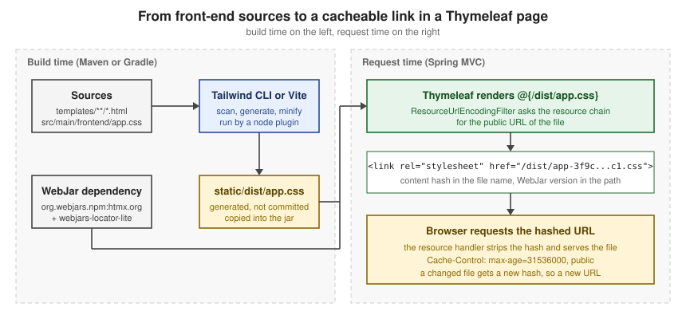

Styling & Front-end Assets
|
This content was generated with the assistance of AI and should be verified against the official documentation before being relied on in production. |
This page is written against Thymeleaf 3.1.5.RELEASE (2026-04-21), Spring Boot 4.1.1 (Spring Framework 7.0.9) and Java 21,
with Tailwind CSS 4.3.3 (npm, 2026-07-16), Vite 8.3.3, frontend-maven-plugin 2.0.2 and the Gradle node plugin 7.1.0, all
checked on 2026-10-08. Every example was run on that stack: the Spring parts through MockMvc (and WebTestClient for WebFlux)
in a Spring Boot 4.1.1 scratch application, the Tailwind and Vite parts as real builds. The output shown is what was produced.
Thymeleaf itself only writes the URLs of the assets (@{...}); the files are served by the web framework and built by
your build tool. So the serving and cache-busting sections apply to Thymeleaf with Spring MVC (everything works) and
with Spring WebFlux (static files and WebJars work, but links are not versioned, see the WebFlux section), and the
Tailwind, Vite and Bootstrap parts also apply to standalone Thymeleaf, where you serve the files yourself.
The books about Thymeleaf describe a front-end pipeline that no longer matches current tooling. The sections below say
what changed and show the current approach, including the part that surprises most people coming from Tailwind 3 or from
those books: Tailwind v4 has no purge or content setting, and it scans your templates as plain text.
In a hurry: what to use for what
| You want… | Use | Why |
|---|---|---|
Your own CSS, JavaScript and images served |
Files in |
Spring Boot serves |
A library such as htmx or Bootstrap without npm |
A WebJar plus |
A pinned, self-hosted, version-less path in the template. |
Files that browsers may cache for a year |
|
|
Tailwind CSS v4 |
|
One CSS entry file; no config file; the engine scans your |
The CSS build inside |
|
Installs a local Node and runs your |
A new project with all of this wired |
|
The Taming Thymeleaf generator; check the generated Tailwind version, see below. |
Template and CSS edits visible while developing |
|
DevTools LiveReload is deprecated since Spring Boot 4.1.0 with no replacement. |

Where the books are outdated
Two books cover this ground, and both predate the current tools. They are useful for the ideas and for the project layouts, but do not copy their set-up.
-
Taming Thymeleaf (the 2021 edition, version 1.1.1, was consulted; the Leanpub edition is now updated for Spring Boot 3) builds its application with Tailwind CSS 2: a
purgelist in the Tailwind configuration, PostCSS, a Gulp pipeline that copies files intotarget/classeswith browser-sync as the live-reload proxy, and Node 13. In Tailwind v4 there is nopurgeoption (norcontent; the engine finds the sources itself), the CLI or Vite plugin replaces PostCSS and Gulp, and Node 13 is long out of support. Thefrontend-maven-pluginand areleaseprofile for the production build are still a sound idea and are shown below with current versions. -
Modern frontends with htmx generates its demos with
ttcliand Tailwind 3: atailwind.config.jswith acontentarray and the three@tailwinddirectives. Tailwind v4 replaces them with a single@import "tailwindcss"line and CSS-first configuration (@theme,@source). The v4 upgrade guide documents that the@tailwinddirectives were removed and that a JavaScript config file is no longer detected automatically (it can be loaded with@config). The htmx and WebJar usage in that book is also older than htmx 2; see htmx Fundamentals for that.
Both books also use the local profile idea (spring.thymeleaf.cache=false only on a developer machine), which is
still valid and is covered under live reload below.
For the same change on the Tailwind side, see the Tailwind upgrade guide page of the Tailwind section.
Static resources in Spring Boot
By default Spring Boot serves files from the classpath directories static, public, resources and META-INF/resources,
mapped on /**, through Spring MVC’s resource handler. (In an executable web application the servlet container’s default
servlet is not enabled; server.servlet.register-default-servlet turns it on as a fallback.) The three properties that change this are spring.web.resources.static-locations (replaces the
list of locations), spring.mvc.static-path-pattern (the URL pattern, default /**) and spring.web.resources.add-mappings
(default true; false turns the whole default mapping off). In Thymeleaf you do not write the path by hand: you use a
link expression, which prepends the context path and, as the next sections show, can version the file.
Put the files under static:
src/main/resources/
static/
css/site.css
js/shelf.js
templates/
assets/page.htmlSource: Spring Boot — Static Content
and link them with th:href and th:src. The plain href is the natural-template fallback: opened as a file the page
still finds its stylesheet, and the server replaces it.
<!DOCTYPE html>
<html xmlns:th="http://www.thymeleaf.org">
<head>
<meta charset="UTF-8">
<title>Assets</title>
<link rel="stylesheet" th:href="@{/css/site.css}" href="../../static/css/site.css">
<script th:src="@{/js/shelf.js}" defer></script>
</head>
<body>
<h1>Bookshelf</h1>
</body>
</html>Rendered by a controller method that returns assets/page (Boot 4.1.1, no extra properties):
<link rel="stylesheet" href="/css/site.css">
<script src="/js/shelf.js" defer></script>With a context path (a request made to /shelf/assets in the context /shelf), the same template rendered
href="/shelf/css/site.css". That is the reason to always write @{/css/site.css} rather than a literal /css/site.css:
the literal form breaks when the application is deployed under a context path, and it is never versioned (below).
Source: Using Thymeleaf — Link URLs
The link page of this section (Link URLs) covers the @{...} syntax itself.
Spring Security and static files
With Spring Security on the classpath every request needs a decision, including the CSS that the login page itself loads.
A rule such as anyRequest().authenticated() without an exception for the assets answers 302 to /login for them, so
the login page shows unstyled. Boot has a helper for the common locations, and your own output directory (here
/dist, where the Tailwind build writes) gets an explicit matcher:
@Bean
SecurityFilterChain chain(HttpSecurity http) throws Exception {
http.authorizeHttpRequests(a -> a
.requestMatchers(PathRequest.toStaticResources().atCommonLocations()).permitAll()
.requestMatchers("/login", "/dist/**").permitAll()
.anyRequest().authenticated())
.formLogin(Customizer.withDefaults());
return http.build();
}PathRequest here is org.springframework.boot.security.autoconfigure.web.servlet.PathRequest (the package changed in
Boot 4). atCommonLocations() covers the locations named by the StaticResourceLocation enum: CSS, JAVA_SCRIPT,
IMAGES, WEB_JARS, FAVICON and FONTS. It compiled and ran in the scratch application, which served /dist/app.css,
/js/shelf.js and /webjars/... without a login. See Spring Security Integration
for the rest of the security set-up.
Source: Spring Boot API — PathRequest
WebJars and the version-less locator
A WebJar is a Maven artifact that packages a client-side library under META-INF/resources/webjars/<name>/<version>/.
Spring Boot maps /webjars/** to those directories (the pattern can be changed with spring.mvc.webjars-path-pattern),
so a library arrives as an ordinary dependency, is pinned by Maven and is served from your own origin. The WebJars site
lists the coordinates, and the org.webjars.npm group mirrors npm packages.
<dependency>
<groupId>org.webjars</groupId>
<artifactId>webjars-locator-lite</artifactId>
</dependency>
<dependency>
<groupId>org.webjars.npm</groupId>
<artifactId>htmx.org</artifactId>
<version>2.0.11</version>
</dependency>
<dependency>
<groupId>org.webjars</groupId>
<artifactId>bootstrap</artifactId>
<version>5.3.8</version>
</dependency>Source: WebJars
The Spring Boot 4.1.1 BOM manages webjars-locator-lite (1.1.4 there), so no version is given for it. It does not manage
the libraries themselves: give their version, which is the version of the npm package. The htmx.org WebJar is a good
example of why to pin it deliberately: the newest one on Maven Central is 4.0.0, the htmx 4 line, which is not the htmx 2
API that the htmx pages of this section teach.
webjars-locator-lite lets the template leave the version out. The path
/webjars/htmx.org/dist/htmx.min.js is resolved to the one WebJar that provides htmx.org, so upgrading the library
is a change to pom.xml only:
<link rel="stylesheet" th:href="@{/webjars/bootstrap/css/bootstrap.min.css}">
<script th:src="@{/webjars/bootstrap/js/bootstrap.bundle.min.js}" defer></script>
<script th:src="@{/webjars/htmx.org/dist/htmx.min.js}" defer></script>Rendered on Boot 4.1.1 with the locator on the classpath, the links come out with the real version, and the version-less path is also answered when requested directly:
<link rel="stylesheet" href="/webjars/bootstrap/5.3.8/css/bootstrap.min.css">
<script src="/webjars/htmx.org/2.0.11/dist/htmx.min.js" defer></script>GET /webjars/htmx.org/dist/htmx.min.js -> 200
GET /webjars/htmx.org/2.0.11/dist/htmx.min.js -> 200 text/javascriptWithout webjars-locator-lite the same template renders the path as written, and the version-less request answers
404; the scratch application showed exactly that, so a missing locator is the usual reason for a WebJar link that
"worked in the IDE". Spring Boot’s own documentation describes the version-agnostic URLs and the webjars-locator-lite
dependency in the same Static Content section quoted above, and the WebJars site has a Spring Boot page.
For htmx and Alpine.js as WebJars, versus a CDN with Subresource Integrity, see
htmx Fundamentals and
Alpine.js & Web Components. Both load their scripts from /webjars/**
and mention that the security chain must permit that path.
Versioned resources and ResourceUrlEncodingFilter
Browsers can cache a CSS file for a year, but only if a deployment that changes the file also changes its URL. Spring’s resource chain does that by inserting a version into the URL when the template is rendered, and understanding the URL again when the browser asks for it. There are two pieces:
-
A versioning strategy on the resource handler:
content(a hash of the file in the name, such assite-49ab...c1.css) orfixed(a constant prefix such as/v12/). -
The
ResourceUrlEncodingFilter, which makesHttpServletResponse.encodeURL()return the versioned URL. Thymeleaf’s@{...}link builder callsencodeURL, so templates get versioned links without any change. Spring Boot registers the filter for Thymeleaf (and FreeMarker) automatically; you only declare it yourself for a template technology such as JSP.
Turn the content strategy on for everything:
spring.web.resources.chain.strategy.content.enabled=true
spring.web.resources.chain.strategy.content.paths=/**
spring.web.resources.cache.cachecontrol.max-age=365d
spring.web.resources.cache.cachecontrol.cache-public=trueSource: Spring Boot — Static Content
The template did not change. This is what it rendered, and what the browser’s follow-up requests got:
<link rel="stylesheet" href="/css/site-49ab8c649aaddc17697d493259623cc1.css">
<script src="/webjars/htmx.org/2.0.11/dist/htmx.min-3d6553be673509e52e526683624b4e2b.js" defer></script>
<script src="/js/shelf-d5223a5999e03fcc5a30bfd072112045.js" defer></script>
GET /css/site-49ab8c649aaddc17697d493259623cc1.css -> 200 text/css
Cache-Control: max-age=31536000, public ETag: W/"49ab8c649aaddc17697d493259623cc1"
GET /css/site.css -> 200 (the plain URL still works)The same run without the two cachecontrol properties answered with Cache-Control: no-cache, no-store, max-age=0,
must-revalidate. That header comes from Spring Security’s default response headers when the resource handler sets none, so
on an application with Spring Security the cache properties are what make the assets cacheable at all.
A JavaScript module loader that builds URLs in the browser cannot use renamed files. For those, the fixed strategy puts
a version in the path instead of the file name, and the two can be combined, with the content strategy on the rest:
spring.web.resources.chain.strategy.content.enabled=true
spring.web.resources.chain.strategy.content.paths=/css/**
spring.web.resources.chain.strategy.fixed.enabled=true
spring.web.resources.chain.strategy.fixed.paths=/js/**
spring.web.resources.chain.strategy.fixed.version=v12<link rel="stylesheet" href="/css/site-49ab8c649aaddc17697d493259623cc1.css">
<script src="/v12/js/shelf.js" defer></script>Source: Spring Boot — Static Content
A pitfall appears here: the fixed strategy changes the path, so /v12/js/shelf.js is answered 302 to the login page
until the security chain permits /v12/** (the content strategy keeps the directory, so /css/** keeps matching). The
other pitfalls: a plain href="/css/site.css" without th:href is never rewritten, and the filter only helps links
that go through @{...}, because only those reach encodeURL.
Spring WebFlux
With Thymeleaf and Spring WebFlux the static files and WebJars are served (properties: spring.webflux.static-path-pattern
and spring.webflux.webjars-path-pattern, defaults /** and /webjars/**; locations still come from
spring.web.resources.static-locations), and the locator resolves version-less WebJar paths when a request arrives.
What does not happen is link versioning: in a WebFlux scratch application with the same two content-strategy properties
the template
<link rel="stylesheet" th:href="@{/css/site.css}">
<script th:src="@{/webjars/htmx.org/dist/htmx.min.js}" defer></script>rendered the links exactly as written (/css/site.css and /webjars/htmx.org/dist/htmx.min.js), with both requests answering
200. Spring Boot’s documentation of ResourceUrlEncodingFilter auto-configuration is in the Spring MVC section only.
In a WebFlux application, let the build tool put a hash in the file name (Vite does by default) or serve the assets
through a CDN or proxy that does, and give the files long cache headers only when the name changes.
The page about Thymeleaf with Spring WebFlux covers the rest of the reactive set-up.
Tailwind CSS v4 with Thymeleaf templates
Tailwind generates CSS for the utility classes it finds in your files, and nothing else. In v4 you do not tell it where
the templates are with a content array; it scans the project, and @source adds or changes the places it looks. The
Tailwind section covers the framework itself (see Tailwind CSS,
Getting Started and Build and Production);
this section covers how to wire it to a Spring Boot and Thymeleaf project. The surrounding HTML and CSS fundamentals are
in the HTML & CSS section.
The project layout
Keep the Tailwind source outside static, so that the source and the generated file are never confused, and generate into
static/dist:
package.json
src/main/frontend/app.css <- the Tailwind entry file (source)
src/main/resources/templates/**/*.html <- scanned for classes
src/main/resources/static/dist/app.css <- generated (add to .gitignore){
"name": "bookshelf-frontend",
"private": true,
"scripts": {
"build:css": "tailwindcss -i src/main/frontend/app.css -o src/main/resources/static/dist/app.css --minify",
"watch:css": "tailwindcss -i src/main/frontend/app.css -o src/main/resources/static/dist/app.css --watch"
},
"devDependencies": {
"@tailwindcss/cli": "4.3.3",
"tailwindcss": "4.3.3"
}
}@import "tailwindcss";
@source "../resources/templates/**/*.html";Source: Tailwind CSS — Tailwind CLI
The CLI is the @tailwindcss/cli package, and its executable is called tailwindcss. Tailwind also ships it as a
standalone executable that needs no Node.js (the installation page says so; it was not used here). The @source path is
relative to the CSS file, and a glob is accepted. A template that uses utility classes, including in a Thymeleaf
attribute value:
<link rel="stylesheet" th:href="@{/dist/app.css}" href="../../static/dist/app.css">
...
<body class="bg-slate-50 text-slate-900">
<h1 class="text-2xl font-bold tracking-tight">Bookshelf</h1>
<button type="button" th:classappend="${highlight} ? 'ring-2 ring-amber-500'"
class="rounded-md bg-indigo-600 px-3 py-2 text-sm font-semibold text-white hover:bg-indigo-500">Borrow</button>
</body>Running the build (npm ci, then npm run build:css) on a project with only that template:
$ npm run build:css
> build:css
> tailwindcss -i src/main/frontend/app.css -o src/main/resources/static/dist/app.css --minify
≈ tailwindcss v4.3.3
Done in 18ms
$ wc -c src/main/resources/static/dist/app.css
7554 src/main/resources/static/dist/app.cssWithout --minify the same output is 8,766 bytes. It starts with the licence comment and the layer order, then the reset,
then 14 plain utility rules and the hover variant, one for each class that was found, including the one that Thymeleaf adds
in th:classappend (ring-amber-500):
/*! tailwindcss v4.3.3 | MIT License | https://tailwindcss.com */
@layer properties;
@layer theme, base, components, utilities;
...
@layer utilities {
.rounded-md {
border-radius: var(--radius-md);
}
.bg-indigo-600 {
background-color: var(--color-indigo-600);
}
...
.ring-amber-500 {
--tw-ring-color: var(--color-amber-500);
}
@media (hover: hover) {
.hover\:bg-indigo-500:hover {
background-color: var(--color-indigo-500);
}
}
}The ... lines mark omitted rules. The point of the output is that its size follows what the templates use:
remove the button and the next build no longer contains the indigo rules, with no purge step.
What gets scanned, and how to control it
Tailwind reads files as plain text, looks for strings that look like class names, and generates CSS for the ones that exist. It does not parse HTML or run Thymeleaf. That has three consequences for a template engine.
-
Anything that spells the class out is found:
class,th:class,th:classappend,th:attr="class=...", a Javaenumthat holds"bg-rose-600". Thymeleaf expressions around the string do not matter. -
A class assembled at render time is never found. See the pitfall below.
-
By default Tailwind scans the project, skipping files in
.gitignore,node_modules, binary files, CSS files and package-manager lock files. The scan starts at the current working directory.
The @source directives change that. Three forms were built and measured on the scratch application:
/* 1. automatic: scans the whole project from the working directory */
@import "tailwindcss";
/* 2. only what you list, nothing else */
@import "tailwindcss" source(none);
@source "../resources/templates/**/*.html";
/* 3. templates plus Java classes that hold class names, e.g. an enum of badge styles */
@import "tailwindcss" source(none);
@source "../resources/templates";
@source "../java";Results in the scratch application, which has a Java enum with the constants "bg-green-600" and "bg-rose-600" and
four templates:
| Entry file | Output size (minified) | Observation |
|---|---|---|
|
8,140 bytes |
Contains |
|
7,924 bytes |
No |
|
8,140 bytes |
The same output as automatic detection: both enum classes and |
Automatic detection is convenient, and it is also why a stray word such as static in a Java file adds a rule. Use
source(none) with explicit sources in a project whose build output has to be predictable, and keep generated and
unrelated directories out of the scan.
Other directives from the same Tailwind page, all documented there: @source not "..." to ignore a path, the
source("...") argument of the import to move the base path (for a monorepo), and @source inline("...") to force
classes into the output.
The last one, for a class that is stored in a database or built by code, was run:
@import "tailwindcss";
@source "../resources/templates/**/*.html";
@source inline("bg-{red,green,blue}-500");The output then contained bg-red-500, bg-green-500 and bg-blue-500 and not bg-pink-500.
Pitfalls of text scanning in templates
The most common bug is a class name that Tailwind cannot see, because the template builds it:
<!-- never found: the full class name does not appear anywhere -->
<span th:class="'badge bg-' + ${color} + '-500'">dynamic</span>
<!-- found: both complete class names appear in the file -->
<span th:class="${color == 'red'} ? 'bg-red-600' : 'bg-green-600'">literal</span>Built against that template, the CSS contained bg-red-600 and bg-green-600 and neither bg-red-500 nor bg-green-500.
Write complete class names (a map or conditional that holds them), or safelist them with @source inline.
The other pitfalls: classes that only appear in a .css file are not scanned; files in .gitignore are skipped (so a
template directory that you ignore, or a generated page, needs an explicit @source); --watch stops when its standard
input closes unless you pass --watch=always (the CLI help lists that form, which a script or a node plugin needs);
and generated static/dist/app.css belongs in .gitignore so that the build, not a commit, is the source of truth.
The old tailwind.config.js with content is not read unless you load it with @config.
Running the build from Maven
A backend developer should be able to run mvn package without installing Node. The frontend-maven-plugin
(com.github.eirslett, 2.0.2) downloads Node and npm into the build, runs npm ci and then your script, at
generate-resources, which is before the resources are copied. Putting it in a profile keeps the day-to-day build fast and
makes the production build explicit:
<profiles>
<profile>
<id>frontend</id>
<build>
<plugins>
<plugin>
<groupId>com.github.eirslett</groupId>
<artifactId>frontend-maven-plugin</artifactId>
<version>2.0.2</version>
<configuration>
<nodeVersion>v24.12.0</nodeVersion>
<installDirectory>target</installDirectory>
</configuration>
<executions>
<execution>
<id>install node and npm</id>
<goals><goal>install-node-and-npm</goal></goals>
</execution>
<execution>
<id>npm ci</id>
<goals><goal>npm</goal></goals>
<configuration><arguments>ci</arguments></configuration>
</execution>
<execution>
<id>build css</id>
<goals><goal>npm</goal></goals>
<configuration><arguments>run build:css</arguments></configuration>
</execution>
</executions>
</plugin>
</plugins>
</build>
</profile>
</profiles>Running ./mvnw -Pfrontend generate-resources on a clean checkout produced (trimmed):
[INFO] --- frontend:2.0.2:install-node-and-npm (install node and npm) @ bookshelf ---
[INFO] Installing node version v24.12.0
[INFO] Installed node locally.
[INFO] --- frontend:2.0.2:npm (npm ci) @ bookshelf ---
[INFO] Running 'npm ci' in /.../bookshelf
[INFO] added 33 packages, and audited 34 packages in 444ms
[INFO] --- frontend:2.0.2:npm (build css) @ bookshelf ---
[INFO] Running 'npm run build:css' in /.../bookshelf
[INFO] > tailwindcss -i src/main/frontend/app.css -o src/main/resources/static/dist/app.css --minify
[ERROR] ≈ tailwindcss v4.3.3
[ERROR] Done in 21ms
[INFO] BUILD SUCCESSThe [ERROR] prefix is only the plugin printing what the CLI writes to its standard error stream; the build succeeded and
static/dist/app.css existed afterwards. Node is downloaded from nodejs.org once into the local Maven repository and then
unpacked into target. The documented skip properties turn the profile off per machine
(-Dskip.installnodenpm -Dskip.npm), which printed Skipping execution. for each execution. The plugin README notes that
it does not use an already-installed Node (use the exec-maven-plugin for that), and that node_modules belongs in
.gitignore.
Source: frontend-maven-plugin
Running the build from Gradle
The Gradle equivalent is the node plugin, com.github.node-gradle.node (7.1.0 is the latest release listed on the Gradle
plugin portal). It can download Node into .gradle, provides an npmInstall task, and an NpmTask runs a script. Wire the
task into processResources:
plugins {
id 'com.github.node-gradle.node' version '7.1.0'
}
node {
download = true
version = '24.12.0'
}
tasks.register('buildCss', NpmTask) {
dependsOn tasks.named('npmInstall')
args = ['run', 'build:css']
inputs.dir('src/main/frontend')
inputs.dir('src/main/resources/templates')
outputs.dir('src/main/resources/static/dist')
}
tasks.named('processResources') {
dependsOn tasks.named('buildCss')
}./gradlew processResources with Gradle 9.7.1 ran npmInstall and buildCss (the same tailwindcss ... --minify line)
and finished with BUILD SUCCESSFUL, leaving static/dist/app.css in place. Declaring the inputs and the output
directory lets Gradle skip the task when neither the templates nor the CSS entry file changed.
Source: Gradle Node Plugin — Usage
A bundler: Vite
When the project has real JavaScript (TypeScript, Alpine components, Vue islands), Vite is the current bundler, and
Tailwind has a first-party plugin for it. The build produces hashed or fixed file names, and the dev server serves the
sources with hot updates. Install vite, tailwindcss and @tailwindcss/vite, and configure the output to go to
static/dist:
import { defineConfig } from 'vite'
import tailwindcss from '@tailwindcss/vite'
// Reload the browser when a Thymeleaf template changes (Vite only watches what it imports).
const reloadOnTemplateChange = () => ({
name: 'reload-on-template-change',
configureServer(server) {
server.watcher.add('src/main/resources/templates')
server.watcher.on('change', (file) => {
if (file.endsWith('.html')) {
server.ws.send({ type: 'full-reload' })
}
})
}
})
export default defineConfig({
plugins: [tailwindcss(), reloadOnTemplateChange()],
build: {
outDir: 'src/main/resources/static/dist',
emptyOutDir: true,
rollupOptions: {
input: 'src/main/frontend/main.js',
output: { entryFileNames: 'main.js', assetFileNames: '[name][extname]' }
}
},
server: { port: 5173, strictPort: true }
})with src/main/frontend/main.js containing import './app.css' and the same app.css as above. npm run build (vite build)
printed:
vite v8.3.3 building client environment for production...
✓ 3 modules transformed.
src/main/resources/static/dist/main.css 7.58 kB │ gzip: 2.23 kB
src/main/resources/static/dist/main.js 0.00 kB │ gzip: 0.02 kB
✓ built in 109msSource: Tailwind CSS — Using Vite
The two entryFileNames/assetFileNames settings give stable names, so the template can link /dist/main.css and let
the Spring resource chain add the content hash (on MVC). Vite’s own default is hashed names plus a manifest that a backend
reads; its backend integration guide describes that route.
In development you do not build. The Spring template switches to the dev server when a property is set, and the pages then load their CSS and JavaScript from Vite with hot updates:
@ControllerAdvice
class ViteDevServerAdvice {
private final String devServer;
ViteDevServerAdvice(@Value("${app.vite.dev-server:}") String devServer) {
this.devServer = devServer;
}
@ModelAttribute("viteDevServer")
String viteDevServer() {
return devServer.isBlank() ? null : devServer;
}
}<th:block th:if="${viteDevServer}">
<script type="module" th:src="@{${viteDevServer} + '/@vite/client'}"></script>
<script type="module" th:src="@{${viteDevServer} + '/src/main/frontend/main.js'}"></script>
</th:block>
<th:block th:unless="${viteDevServer}">
<link rel="stylesheet" th:href="@{/dist/main.css}">
</th:block>With app.vite.dev-server=http://localhost:5173 in a local profile (the value comes from configuration, never from the
request) the page rendered the two module scripts, and without it the single built stylesheet:
<script type="module" src="http://localhost:5173/@vite/client"></script>
<script type="module" src="http://localhost:5173/src/main/frontend/main.js"></script><link rel="stylesheet" href="/dist/main.css">The Vite dev server was started and queried: it served /src/main/frontend/main.js, regenerated the CSS with the new class
after a template edit (requested with the ?t= timestamp that its client adds), and pushed {"type":"full-reload"}
messages over its WebSocket when page.html changed, which is what the small plugin above sends. Vite’s default
server.cors allowed the origin http://localhost:8080 (it answered Access-Control-Allow-Origin: http://localhost:8080) and
sent no such header for http://evil.example, so there is no reason to set cors: true.
Two details are easy to miss. Vite’s watcher takes a directory, not a glob: server.watcher.add('src/main/resources/templates/**/*.html')
matched nothing in the test, and the directory form worked. And a string literal containing /@vite in the middle of a
${...} in th:src is refused by Thymeleaf 3.1.5 with the restricted-mode message "Instantiation of new objects and access
to static classes or parameters is forbidden in this context": th:src="${viteDevServer + '/@vite/client'}" failed
that way, while the form above, and th:src="${viteDevServer} + '/@vite/client'", rendered correctly. The same literal in
th:title was fine; see Appendix D of the tutorial for the contexts where restricted mode applies.
Source: Vite — Backend Integration
For the build side, a Vite build is run from Maven or Gradle exactly like the CLI build above, with the script
vite build in package.json.
Bootstrap
Bootstrap needs no build step to use. The quickest route is the WebJar from the section above, linked with version-less paths; the page of the Bootstrap section on getting started covers the other routes (npm, CDN) and customization covers Sass variables, which do need a build. See Bootstrap for the framework itself.
<!DOCTYPE html>
<html xmlns:th="http://www.thymeleaf.org">
<head>
<meta charset="UTF-8">
<title>Bootstrap</title>
<link rel="stylesheet" th:href="@{/webjars/bootstrap/css/bootstrap.min.css}">
<script th:src="@{/webjars/bootstrap/js/bootstrap.bundle.min.js}" defer></script>
</head>
<body class="container py-4">
<button type="button" class="btn btn-primary">Borrow</button>
</body>
</html>With the content strategy and the locator active, it rendered:
<link rel="stylesheet" href="/webjars/bootstrap/5.3.8/css/bootstrap.min-1b1cb0e2be9a21f091a87691f20c6300.css">
<script src="/webjars/bootstrap/5.3.8/js/bootstrap.bundle.min-5cc1b73e70520fa84b1846afe0ec8fb6.js" defer></script>and both URLs answered 200 with Cache-Control: max-age=31536000, public. Choose Bootstrap or Tailwind for a given
page, not both: they style the same elements with different base rules (Tailwind’s preflight resets what Bootstrap’s
Reboot sets up), so a page that loads both is hard to reason about.
Source: Bootstrap — Introduction
ttcli: a project generator
ttcli is the "Taming Thymeleaf CLI" by the author of both books. It asks a few questions (group and artifact id, Boot
version, Thymeleaf or JTE, the live reload set-up and the web dependencies) and creates a Spring Boot project in a
sub-directory with the front-end already wired. According to its README it adds the npm scripts and dependencies for the
chosen live reload set-up, starter index.html and layout/main.html templates, Tailwind CSS or Bootstrap when selected,
the WebJars in the Maven dependencies, and an application-local.properties with template caching disabled. The live
reload choices are DevTools (simplest, slowest, no npm unless Tailwind is chosen), npm-based watch scripts, and Vite.
The README says to read the generated HELP.md for how to work with the choice. Version 1.13.0 was the latest release when
this page was checked (2026-10-05).
# any of these, per the README (Homebrew on macOS and Linux, JBang as an alternative)
brew install wimdeblauwe/homebrew-ttcli/ttcli
ttcli init
jbang run ttcli@wimdeblauwe initSource: ttcli — README
ttcli was not run for this page: it is a downloaded binary, and the commands above are quoted from its README. Use it as
a starting point and check the result. In particular, the htmx book shows generated projects with Tailwind 3 configuration,
so look at which Tailwind version the generated package.json pins, and move a Tailwind 3 project to v4 with the
upgrade guide rather than assuming the generator did.
Live reload without DevTools LiveReload
The DevTools LiveReload server pushed a browser refresh when a resource changed. Spring Boot 4.1.0 deprecated it "with no
replacement". The 4.1.1 metadata confirms it: spring.devtools.livereload.enabled (default false) and
spring.devtools.livereload.port (default 35729) are both marked deprecated since 4.1.0. The rest of DevTools is not
deprecated: automatic restart and the development-time property defaults, which include spring.thymeleaf.cache=false,
remain. What you lose is the automatic browser refresh, and the options below replace it or make it unnecessary.
| Option | What it gives | Checked how |
|---|---|---|
|
The engine re-reads a template file on every request, so an edited template shows on the next browser refresh.
DevTools sets it for you; set it yourself in a |
Run: edited a template and a CSS file, see below. |
Serve |
|
Run: see below. |
The Boot plugins' |
With the Maven plugin’s |
Documentation only. |
A Tailwind watcher |
|
Run: see below. |
Vite dev server |
Hot-updated CSS and JavaScript, and a full page reload when a template changes (the plugin in the Vite section). |
Run: see the Vite section. |
DevTools restart |
Still restarts the application on class changes. Changes under |
Metadata and documentation. |
Templates and static files without a restart
The first two rows were run together. A scratch test started the application with spring.thymeleaf.cache=false and the
two file: locations pointing at a temporary copy, rendered the page, edited both files on disk, and rendered again:
spring.thymeleaf.cache=false
spring.thymeleaf.prefix=file:src/main/resources/templates/
spring.web.resources.static-locations=file:src/main/resources/static/before the edit: <h1>First edit</h1> h1 { color: red; }
after the edit: <h1>Second edit</h1> h1 { color: blue; }The same test with spring.thymeleaf.cache=true kept rendering <h1>First edit</h1> after the template was edited, while the
CSS file changed anyway: static files are read from the location on each request, so it is the template cache that has to be
off. Run the application from the project root, because a relative file: path is resolved against the working directory.
Do not set the file: prefix in production: the packaged application has no src directory.
A Tailwind watcher
--watch keeps the CLI running and rebuilds when a scanned file changes. In the scratch application the watcher was
started (as tailwindcss -i ... -o ... --watch=always), a template was edited to replace bg-indigo-600 with bg-teal-700,
and a few seconds later the output file contained bg-teal-700. Its output was:
≈ tailwindcss v4.3.3
Done in 68ms
Done in 1msRun npm run watch:css in one terminal and the application in another. The browser still needs a manual refresh unless you
use the Vite set-up, which pushes the reload.
Source: Tailwind CSS — Tailwind CLI
A local profile (application-local.properties, activated with --spring.profiles.active=local) is the place for
spring.thymeleaf.cache=false, the file: locations and app.vite.dev-server, so none of them reaches production.
The page on Spring Boot auto-configuration and properties
lists the spring.thymeleaf.* properties, and Performance & Production covers what to
turn back on for a deployment.
Pitfalls
| Symptom | Cause and fix |
|---|---|
The WebJar link returns |
|
The login page is unstyled, or an asset answers |
The security chain does not permit the asset path. Permit the static locations, your output directory ( |
A link in the page is not versioned |
It does not go through |
Static assets are never cached, or are cached for a year after a change |
Spring Security’s default |
A Tailwind class works in one template and not in another |
It is built at render time ( |
The CSS output contains utilities you never wrote |
Automatic detection scanned other files (for example the Java keyword |
The Tailwind build "succeeds" but nothing is styled |
The generated file is not linked, or it is written to a directory that the application does not serve, or the browser cached the old file. Check the |
|
A |
The Tailwind watcher exits immediately in a script |
|
Changes to |
The file was not copied to |
Tailwind v3 snippets from the books do not work |
|